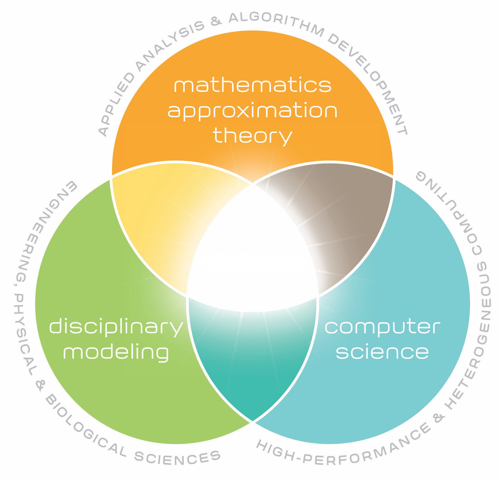

The program will educate the next generation of cross-disciplinary science students with the knowledge, skills, and values needed to pose and solve current and new scientific, technological and societal challenges. The program will lay the foundation for cross-disciplinary educational, research and innovation activities.

It is the first educational program to comprehensively treat computation as the triple junction of algorithm development and analysis, high performance computing, and applications to scientific and engineering modeling and data science. This approach recognizes computation as a new discipline rather than being decentralized into isolated sub-disciplines.
Scientific computing focuses on the development of predictive computer models of the world around us. As studies of physical phenomena through experimentation have become almost impossible, impractical and/or expensive, computational modeling has become the primary tool for understanding, equal in stature to analysis and experiment. The discipline of scientific computing is the development of new methods that make challenging problems tractable on modern computing platforms, providing scientists and engineers with key windows into the world around us.
Data science focuses on the development of tools designed to find trends within datasets that help scientists who are challenged with massive amounts of data to assess key relations within those datasets. These key relations provide hooks that allow scientists to identify models which, in turn, facilitate making accurate predictions in complex systems. For example, a key data science goal on the biological side would be better care for patients (e.g., personalized medicine). Given a patient’s genetic makeup, the proper data-driven model would identify the most effective treatment for that patient.
An important aim of this program is to develop your abilities to pose and solve problems that combine insights from one or more disciplines from the natural sciences with mathematical tools and computational skills. This provides a unique combination of applied and theoretical knowledge and skills. These features are invaluable for the development of multi-disciplinary educational and research programs. The main focus is not to educate computer specialists, but to educate people with a solid understanding in basic science as well as an integrated knowledge on how to use essential methods from computational science. This requires an education that covers both the specific disciplines like physics, biology, geoscience, mathematics etc with a strong background in computational science. This Master of Science program is unique in the sense that it will enable application-driven computational modeling while also exposing disciplinary computational scientists to advanced tools and techniques, which will ignite new transformational connections in research and education.
This is new program at the University of Oslo and through various activities, spanning from common meetings and field trips to various social gatherings, we will gradually build up a top learning environment where you will thrive as a student and learn to develop your scientific creativity. The University of Oslo offers a rich and active student environment with more than 200 student lead activities and organizations.
All study options offer possibilities for stays abroad. Planning a semester or more abroad or performing parts of your thesis at a collaborating institution is something we highly recommend. As a student in this program you have a number of interesting international exchange possibilities. The involved researchers have extensive collaborations with other researchers worldwide. These exchange possibility range from top universities in the USA, Asia and Europe as well as leading National Laboratories in the USA. Don't hesitate to get in touch with the contact person of your study option in case you plan to spend some time abroad. Studies at other institutions can be planned from the very first semester of this Master of Science program.
Students at the University of Oslo may choose to take parts of their degrees at a university abroad. The University of Oslo has exchange agreements with other universities in different parts of the world. The MN Faculty has additional exchange agreements with many universities abroad.
A significant aspect of this program is the ability to offer new educational opportunities that are aligned with the needs of a 21st century workforce. Many companies are seeking individuals who have knowledge of both a specific discipline and computational modeling. And candidates who are capable of modeling and understanding complicated systems in natural science, are in short supply in society. The computational methods and approaches to scientific problems that you will learn when working on your thesis project are very similar to the methods you will use in later stages of your career. To handle large numerical projects demands structured thinking and good analytical skills and a thorough understanding of the problems to be solved. This knowledge makes the students unique on the labor market.
Career opportunities are many, from research institutes, universities and university colleges and a multitude of companies. The program gives an excellent background for further studies, with a PhD as one possible goal.
The program has also a strong international element which allows students to gain important experience from international collaborations in science, with the opportunity to spend parts of the time spent on thesis work at research institutions abroad.